library(ggplot2)
library(tidyverse)
tribble(~language, ~level, ~weeks,
"Spanish", 1, 23.5,
"Portuguese", 1, 23.5,
"German", 2, 30,
"Mandarin", 5, 88) ->
language_levels
language_levels |>
ggplot() +
# order this variable as it appears in data
# else we'll be alphabetical
aes(x = language |> fct_inorder()) +
aes(y = weeks) +
geom_col()another exercise
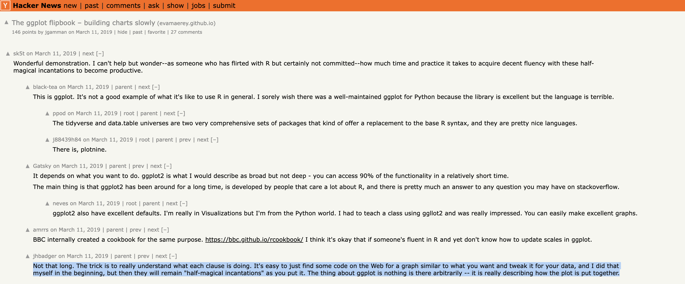
Languages data
The Foreign Service Institute (FSI) has created a list to show the approximate time you need to learn a specific language as an English speaker.
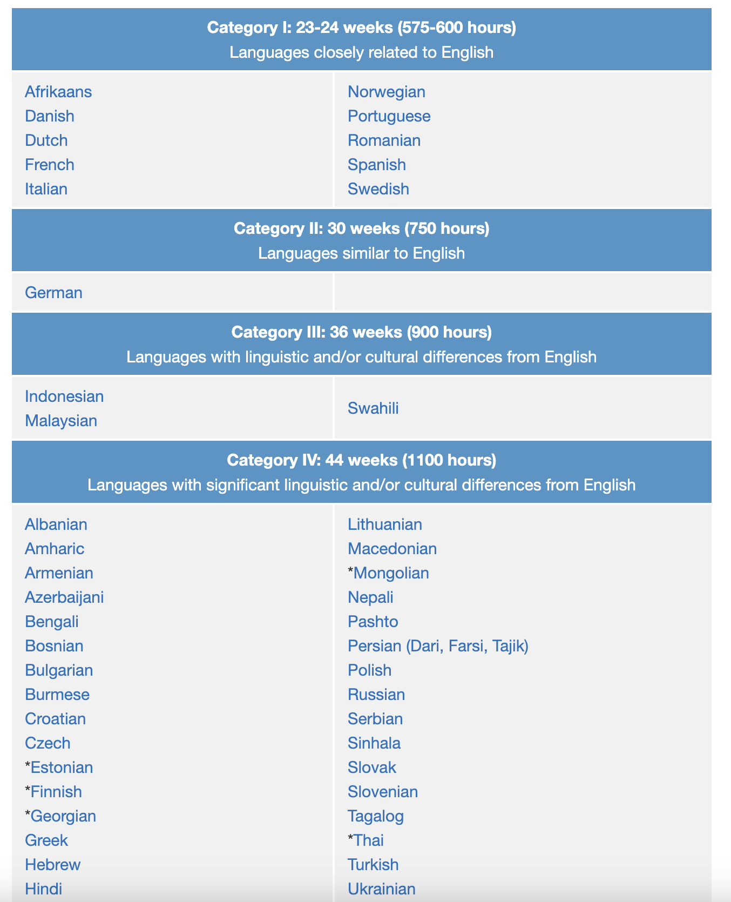
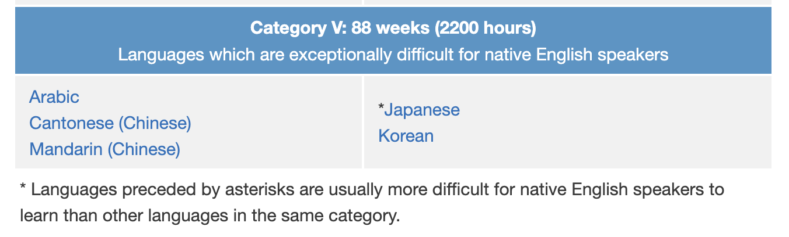
Esperanto?
Esperanto is the most successful constructed international auxiliary language, and the only such language with a sizable population of native speakers. https://en.wikipedia.org/wiki/Esperanto
1/4 of the time as non-constructed languages!?!
Is ggplot2 like Esperanto?
–
Consistency and discipline will keep the language
- predictable
- easy to learn
- easy to use

… Though sometimes there’s room for improvement…
library(ggplot2)
library(tidyverse)
p <- language_levels |>
ggplot() +
aes(x = language |> fct_inorder(),
y = weeks) +
geom_col(width = .3)
p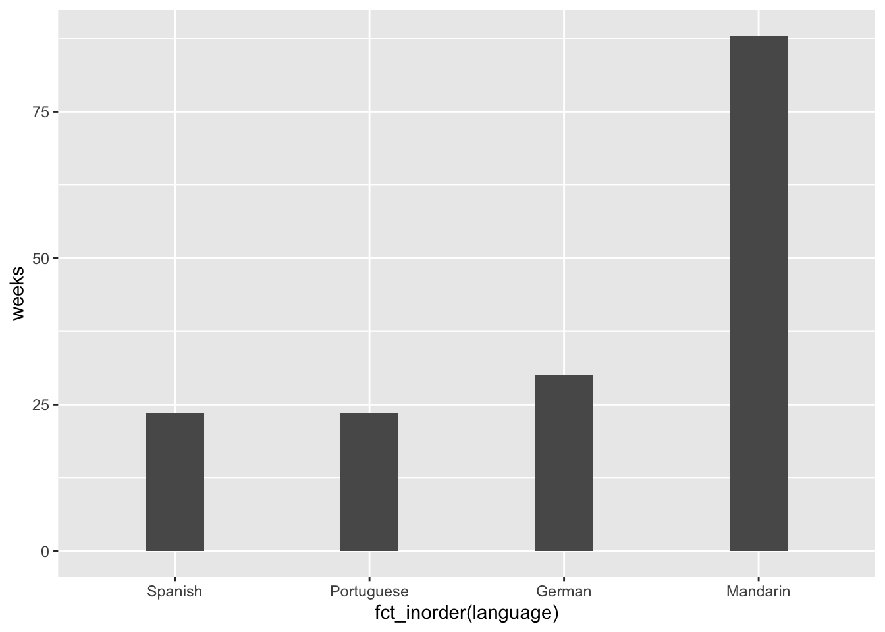
p + coord_polar() # Adds interest? Harder to interpret? 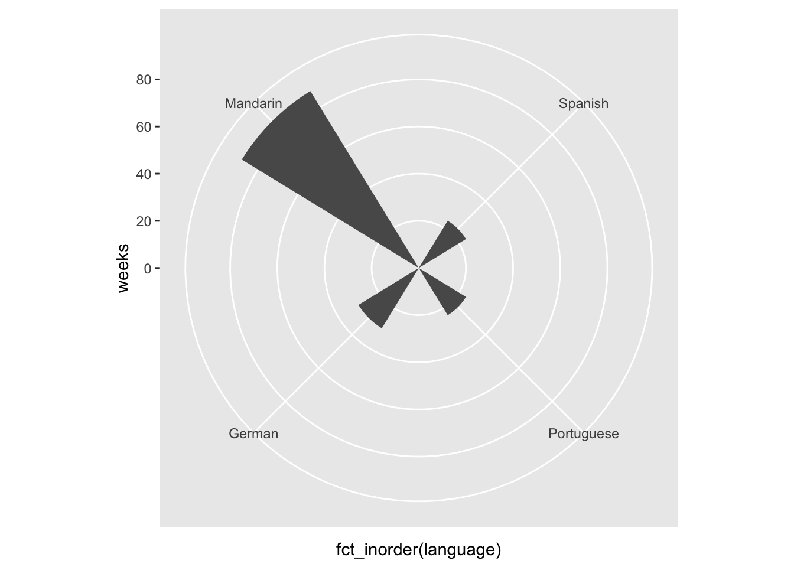
p + coord_equal() # 1:1 aspect ratio (Not great choice for this data)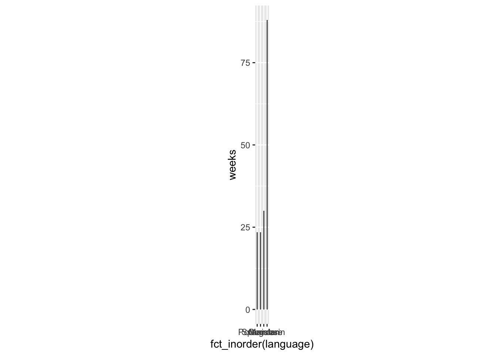
In what way is ggplot2 like English? (even though English is not totally predictable.
English today’s ‘Lingua Franca’ - most spoken language in the world and bridge language
Zero-shot translation: https://youtu.be/xH19VRSOG7g?si=O4zOqGCdnQSOauWM&t=1007
ggplot2…
- very successful
- ggplot2 syntax a bridge language? between:
- visual ‘language’ (visual channels (color, position, shape), tried and true chart types)
- computers (programmed to interpret syntax, and render viz)
- human language (syntax is close to how we might describe things)
“Visualization as Lingua Franca in Machine Learning”…- Fernanda Viegas
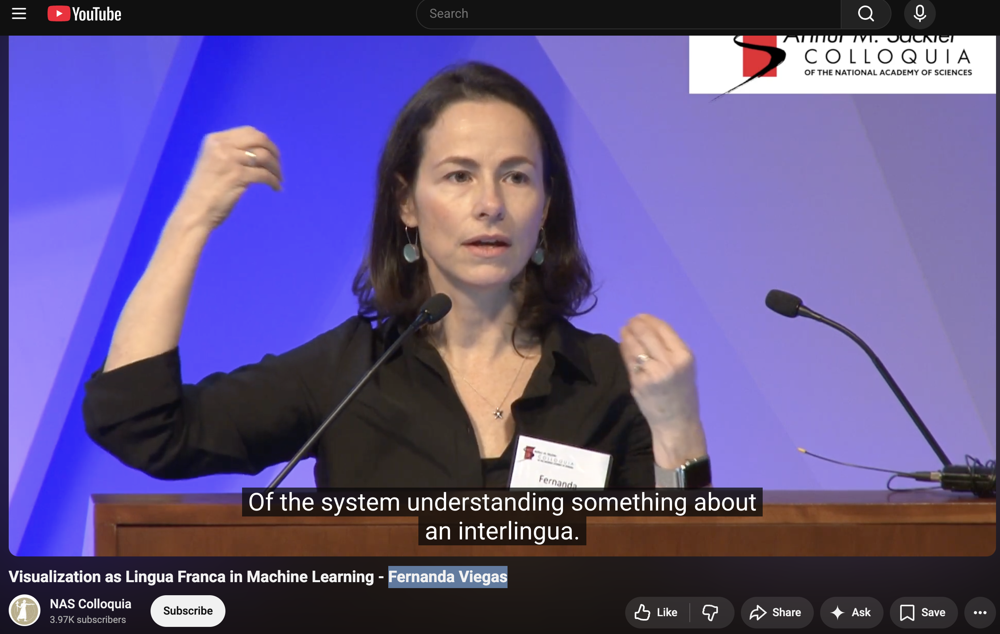
Varga Paraphrase: “data visualization is a window into statistical/ML understanding (and the phenomenon we study with statistics/ML)”
ggplot: ‘The “Layered” grammar of graphics’
What does ‘layer’ refer too?
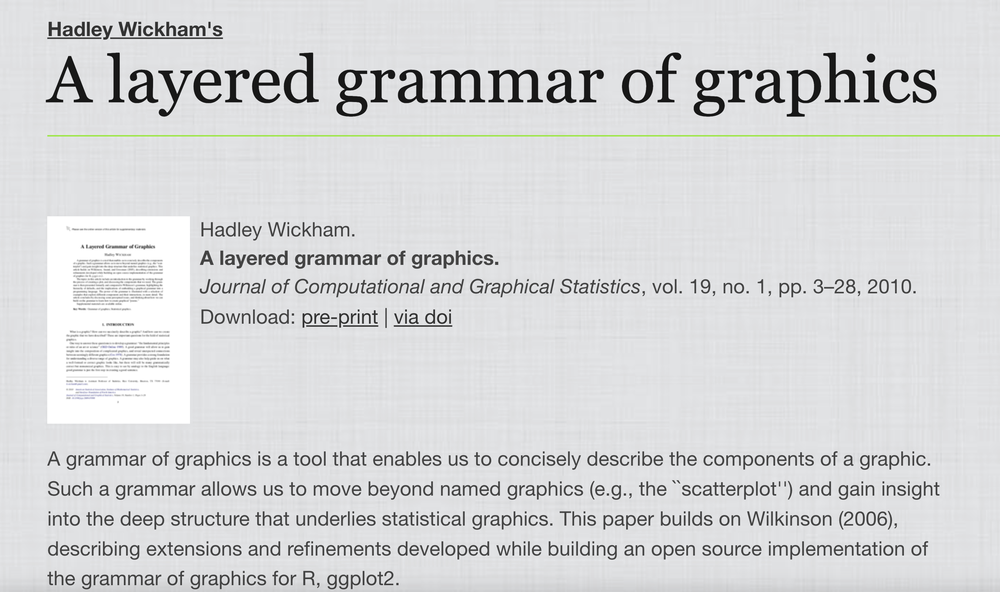
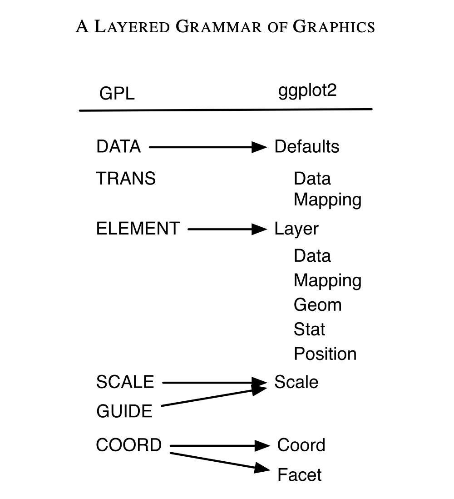
Exercises
- point, tile pile
- lollipop
Text and annotation
- geom_text, geom_label
- annotate(“text”, label = “hello”)
Open ended exercise, use the cheat sheet or ‘grammar guide’ and create two more chart with a geom that we haven’t used. Style with labs(), theme_*(), and more!
https://evamaerey.github.io/ggplot2_grammar_guide/about
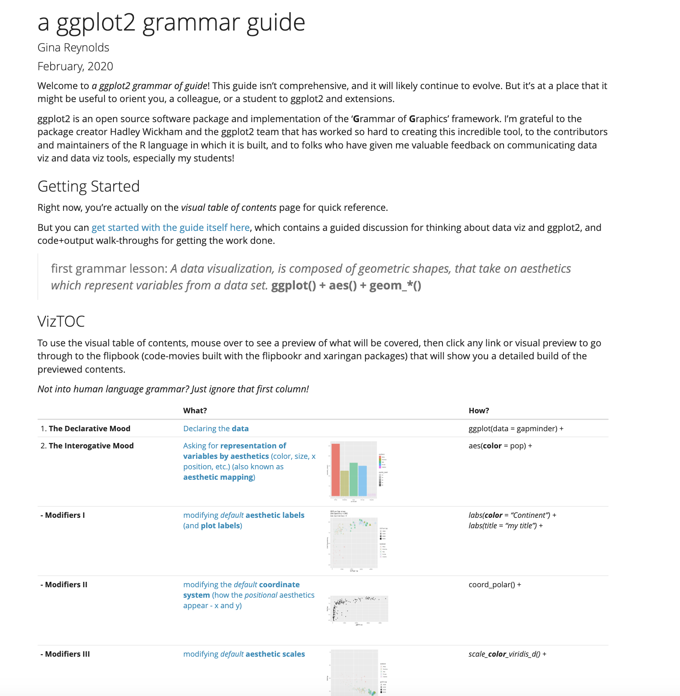
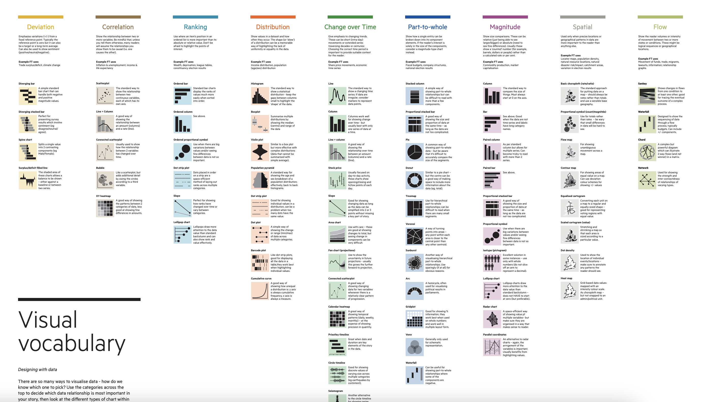
Michel Thomas?
https://www.youtube.com/watch?v=U9Xh-by50pI
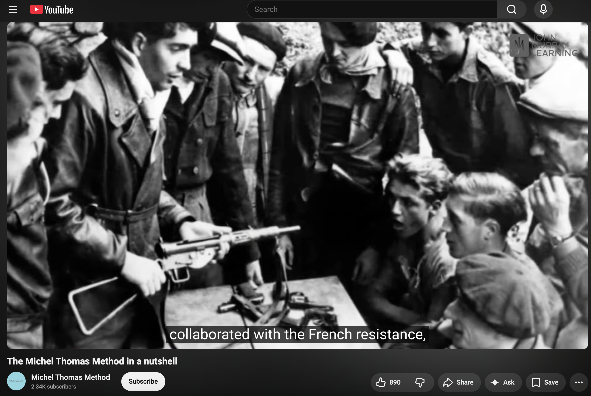